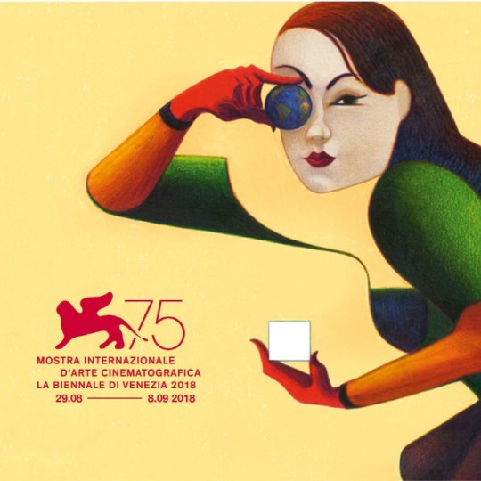

The Venice Film Festival or Venice International Film Festival>(Italian: Mostra Internazionale d'Arte Cinematografica della Biennale di Venezia, "International Exhibition of Cinematographic Art of the Venice Biennale") is the oldest film festival in the world and one of the "Big Three" film festivals, alongside the Cannes Film Festival and Berlin International Film Festival. These three film festivals are nationally acclaimed, and give creators the artistic freedom to express themselves through film.
Founded in Venice, Italy, in August 1932, the festival is part of the Venice Biennale, an exhibition of Italian art founded by the Venice City Council on 19 April 1893.[4] The Venice Biennale, founded in 1893, is situated within the cultural sphere, covering work ranging from art, architecture, dance, music and theatre to cinema (the world-known Venice Film Festival). Today, the Biennale includes a range of separate events including: the International Art Exhibition; the International Festival of Contemporary Music; the International Theatre Festival; the International Architecture Exhibition; the International Festival of Contemporary Dance; the International Kids' Carnival; and the annual Venice Film Festival, which is arguably the best-known of all the events.
The festival in held annually in late August or early September on the island of the Lido in the Venice Lagoon. Screenings take place in the historic Palazzo del Cinema on the Lungomare Marconi. Since its inception the Venice Film Festival has grown into one of the most prestigious film festivals in the world, and it is still one of the most popular and fast-growing.